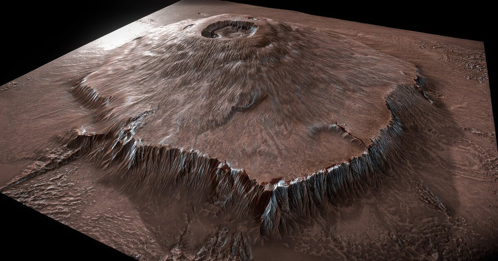
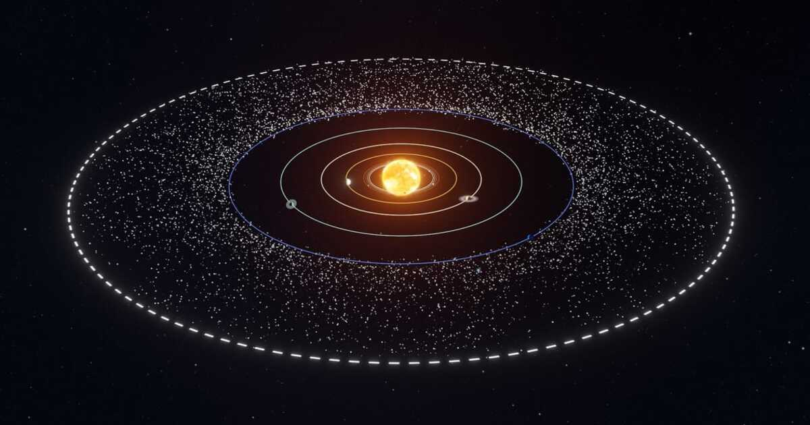
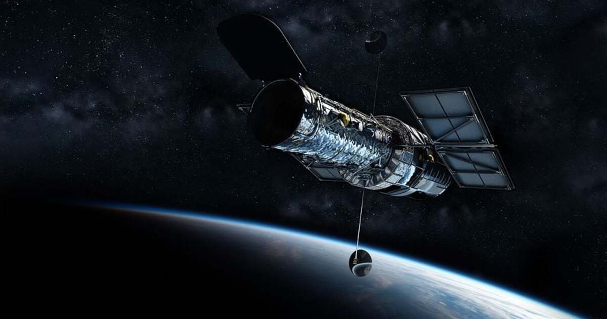
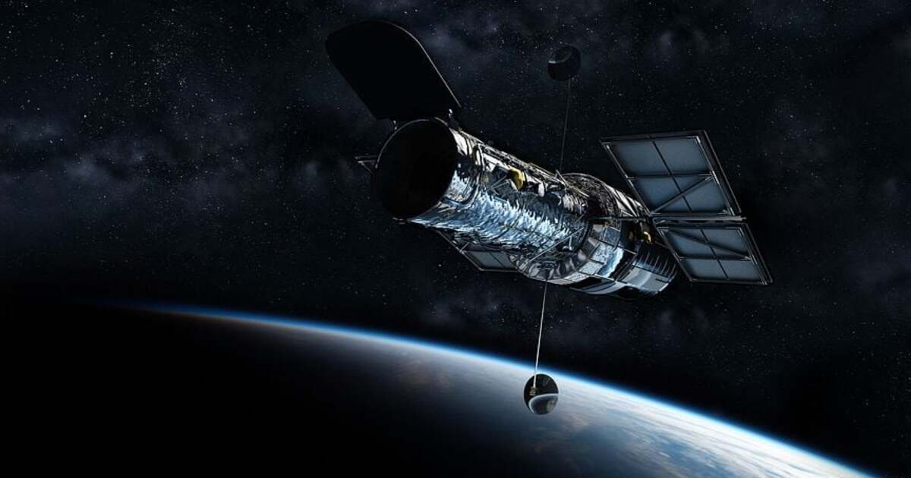

- Do you know the sun is so massive that it makes up more than 99% of the total mass of the solar system?
-
As you know that the largest volcano present on earth is Mauna Loa. But the largest volcano found in
the solar system is on Mars. It's called Olympus Mons and is more than 2 times the height of Mount
Everest.
- Most of you would not know the fact that a day on Venus is longer than a year on Venus. It takes 243 Earth days for Venus to rotate once on its axis and 225 Earth days to orbit the Sun.
-
Jupiter's Great Red Spot is a storm that has been raging for at least 350 years. It's so big that
three Earths could fit inside it.

-
There is no sound in space. Sound waves need a medium to travel through, and in deep space, there
are large empty areas between stars and planets, and there are no molecules to vibrate. So there's
no medium for sound to travel through.
- Saturn's moon Enceladus has geysers that shoot water vapor and ice particles into space. Scientists think there may be an ocean of liquid water beneath its icy crust, which could potentially harbor life.
-
The Kuiper Belt is a region of the solar system beyond Neptune's orbit that is filled with icy
objects, including dwarf planets like Pluto.
- The Andromeda Galaxy is the closest galaxy to the Milky Way and is about 2.5 million light-years away. It is also the largest galaxy in the Local Group, which is a group of galaxies that includes the Milky Way.
-
The International Space Station (ISS) orbits the Earth at an altitude of about 400 km (250 miles)
and travels at a speed of about 28,000 km/h (17,500 mph).
- The Hubble Space Telescope has taken over 1.5 million observations since it was launched in 1990. Its images have helped scientists discover new planets, study the early universe and understand the behavior of black holes. It is one of the largest telescopes present in space.



